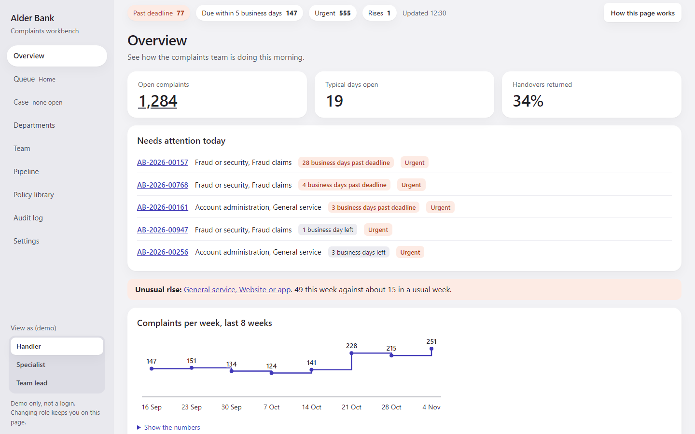
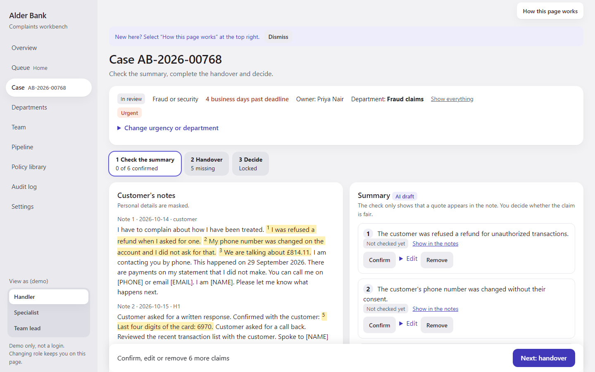

| Risk | Control | Measured on the test bench |
|---|---|---|
| An invented or wrong claim | Every claim needs a word-for-word quote from the notes; the handler confirms each one | 42 of 864 claims blocked |
| Personal data reaches the model | Masked first; unmasking needs a reason and is logged | 21 of 22 test strings caught |
| Sent to the wrong team | Low-confidence cases wait for a person | 11.3% go to a person |
| Silent changes after the fact | Every action in a hash-chained audit log | Tampering detected, not prevented |

Works a queue in deadline order with a preview and one-click actions.
New skill: checking AI output, not writing it.
Sees missing fields before accepting.
Returns need a reason, so the handler learns why.
Sees the whole flow and where cases come back.
Shares work out. No speed league table.
| Test bench | Result |
|---|---|
| Data handled | 1,600 cases: every page under 100 ms |
| At 10 times the volume | 16,000 cases: Overview and Pipeline miss 100 ms |
| Security | Injection, tamper, cross-site and host checks pass; masking 21 of 22 |
| Ease of use | 9 pages x 3 roles fit one laptop screen |
| Routing accuracy | 84.4% overall on held-out data |
| Policy search | 13 of 20 right clause in the top five |
| Tests | TESTCOUNT automated tests, unit and browser |
All data is synthetic, shaped by public FCA, ombudsman and UK Finance figures; channel mix and time of day are our guesses. Settings lists each source.
A quote check proves the words exist, not that the summary is fair. Masking misses bare first names. The role switch is a demo, not a login.
A small local model with drafts recorded in advance: reproducible and private, but not live. Classic models for routing: cheap and explainable.
TF-IDF + logistic regression routing and type
SQLite FTS5, BM25 policy search
qwen3:4b-instruct drafts, run locally with Ollama and recorded
One stage in ten uses a language model.
Claude Code a controller (Claude Fable 5.2, then Claude Opus 5.5) ran builder and reviewer agents on cheaper tiers where the task allowed
Codex the case flow diagram and two second-opinion diagnoses
Local Qwen the recorded drafts
Worked separate reviewers caught masking leaks, an audit gap, a page that wrote on read and a self-flattering accuracy (0.894 fell to 0.844).
Did not an agent misread "too busy" as "too many charts"; the owner corrected it. Codex could not commit from its sandbox.